- Author(s) of this documentation:
- David Coeurjolly, Baptiste GENEST
- Since
- 1.3
Part of package DEC package.
In this documentation page, we detail the operators and tools for differential calculus computations on generic polygonal surfaces (PolygonalCalculus class). Such polygonal surfaces could be generic meshes (with non-planar, non-convex faces), or an embeddeing of a digital surface.
The overall idea, compared to the Discrete exterior calculus approach, is to define per face operators which can be later combined to define global ones.
This module documents the operators defined in [45]. An additional documentation page showcasing classical use cases of these operators for geometry processing on digital surfaces will be added.
- Note
- The sign convention for the divergence and the Laplacian operator is opposite to the one of [45]. This is to match the usual mathematical convention that the Laplacian (and the Laplacian-Beltrami) has negative eigenvalues (and is the sum of second derivatives in the cartesian grid). It also follows the formal adjointness of exterior derivative and opposite of divergence as relation \( \langle \mathrm{d} u, v \rangle = - \langle u, \mathrm{div} v \rangle \). See also https://en.wikipedia.org/wiki/Laplace–Beltrami_operator
- All illustrations below have been obtained using the DGtal+polyscope examples dgtalCalculus.cpp, dgtalCalculus-single.cpp and dgtalCalculus-poisson.cpp. To build these examples, enable the DGTAL_BUILD_POLYSCOPE_EXAMPLES variable (e.g. cmake .. -DDGTAL_BUILD_POLYSCOPE_EXAMPLES=ON).
- Warning
- The implementation heavily relies on implicit operators with many Eigen based small matrice constructions, which has a huge overhead in Debug mode. Please consider to build the examples in Release (e.g. CMAKE_BUILD_TYPE variable) for high performance on large geometrical objects.
Introduction
The main idea of [45] is to define discrete operators per face, which can be combined to obtain a global operator acting on meshes. For vertex valued scalar or vector fields, this class implements elementary differential operators (gradient, derivatives, sharp/flat, Laplace-Beltrami...) which can be combined to define more complex ones, or to be used when solving variational geometry processing problems on meshes or digital surfaces.
The operators detailed [45] extend Mimetic Finite Difference and Virtual Element Method operators to arbitrary 3d polygons and discrete surfaces.
Per face operators
Let us consider a single (non-planar, non-convex) face example. Using
we obtain a SurfaceMesh instance with a unique face and its associated PolygonalCalculus object.
| Example | Example |
|---|---|
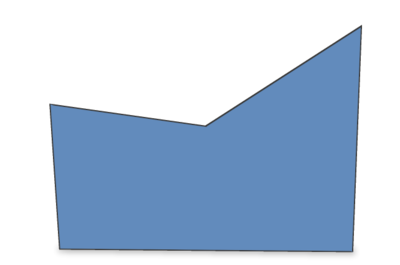
|
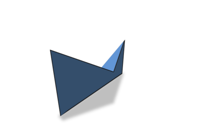
|
Let us add a scalar function on vertices. For instance, using Eigen syntax, we can use;
- Note
- As the face is nonconvex / nonplanar, the vertex scalar quantity interpolation and the rendering in polyscope may be a bit odd.
| Phi | Interpolated phi |
|---|---|
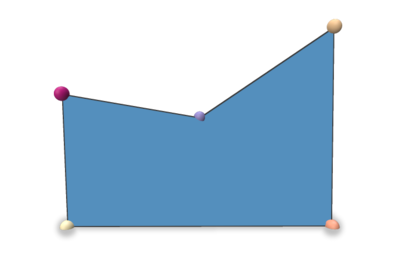
|
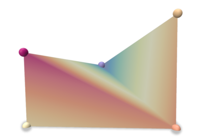
|
When constructing a PolygonalCalculus<SurfMesh> instance, you can provide an external function to embed the vertex positions. By default, the positions of the surface mesh vertices (positions in the previous example) is used. If you want to update the embedding (could be useful on digital surfaces), the user can specify the mapping (Face,Vertex)->RealPoint. Please refer to PolygonalCalculus<SurfMesh>::setEmbedder for an example.
- Note
- As the Face id is a parameter of the embedder, a given vertex can have different embeddings for all its incident faces.
Basic operators
We first describe some standard per face operators. Note that for all extrinsic operators that require the vertex position in \(\mathbb{R}^3 \), the embedder is used. For these quantities, vector/point are encoded as Eigen 3x1 vectors and collections of n points as an \( n\times 3\) matrix.
| Operator | Output | Description |
|---|---|---|
| calculus.X(f) | \( n_f\times 3\) | positions of the face vertices (n_f points in \( \mathbb{R}^3 \)) |
| calculus.E(f) | \( n_f\times 3\) | the edge vectors of the face (n_f vectors in \( \mathbb{R}^3 \)) |
| calculus.A(f) | \( n_f\times n_f\) | averaging operator that averages some values on vertices to values on edges (vectors \((p_{i+1}-p_{i})\in\mathbb{R}^3\)) |
| calculus.B(f) | \( n_f\times 3\) | the edge mid-points of the face (n_f points in \( \mathbb{R}^3 \)) |
| calculus.vectorArea(f) | \( n_f\) vector | the corrected vector area of the face (uses the embedder) |
| calculus.faceArea(f) | scalar | the corrected face area (uses the embedder) |
| calculus.faceNormalVector(f) | vector in \(\mathbb{R}^3\) | the corrected (unitary) normal vector of the face (uses the embedder) |
| calculus.faceNormalAsDGtalVector(f) | RealVector | the corrected (unitary) normal vector of the face (uses the embedder) |
| calculus.centroid(f) | vector in \(\mathbb{R}^3\) | the corrected centroid of the face |
| calculus.centroidAsDGtalVector(f) | RealVector | the corrected centroid of the face |
Derivative operators
Derivative operators act on a scalar field defined on the vertex of the face.
| Operator | Output | Description |
|---|---|---|
| calculus.D(f) | \( n_f\times n_f\) | derivative operator (d0 in DEC) mapping scalar values on vertices to values on edges (vertex scalars to a 1-form) |
| calculus.gradient(f) | \( 3 \times n_f\) | the gradient operator for vertex valued scalar functions of the face f |
| calculus.coGradient(f) | \( 3 \times n_f\) | the co-gradient operator for vertex valued scalar functions of the face f |
| A*phi | D*phi (discrete 1-form) |
|---|---|
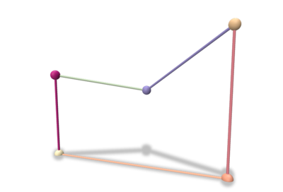
|
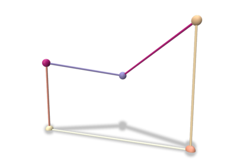
|
| gradient | co-gradient | corrected normal |
|---|---|---|
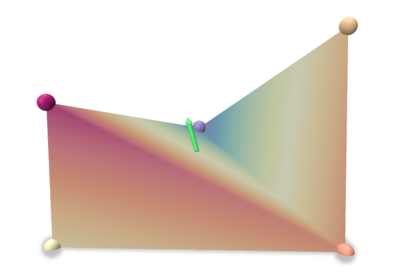
|
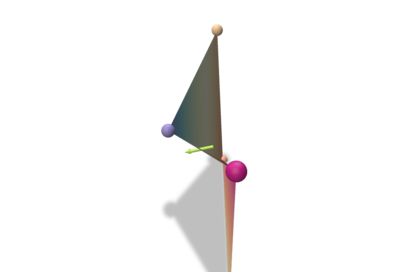
|
Flat/Sharp and Projection Operators
| Operator | Output | Description |
|---|---|---|
| calculus.flat(f) | \( n_f\times 3\) | Flat operator that maps an ambient vector to a local discrete 1-form |
| calculus.sharp(f) | \( 3 \times n_f\) | Sharp operator that maps a discrete 1-form to an ambient vector |
| calculus.P(f) | \( n_f \times n_f\) | Projection operator acting on a discrete 1-form that removes the associated non-tangential part of the vector reconstructed using the sharp operator |
Discrete flat and sharp operators match with the DEC operators (see Discrete exterior calculus). For short, the flat operator embeds an ambient vector as a discrete 1-form (roughly values on the face edges) while the sharp operator pull-back a 1-form to reconstruct a vector in \(\mathbb{R}^3\). These operators are rank 2 and \( sharp_f flat_f s = s\) for any vector \(s\) in the face tangent plane, but \( flat_f sharp_f v = v\) for any vector v does not hold (due to rank deficiencies of the matrices). This is quantified by the projection operator \(P\) (see [45] for structural lemmas, e.g. \( normal_f\cdot (sharp_f flat_f s)=0\quad \forall s\in \mathbb{R}^3\)...).
For interested readers, [45] has a discussion about the relationship between these operators and the classical DEC or FEM ones.
| a vector in \(\mathbb{R}^3\) | a vector in \(\mathbb{R}^3\) | Flat (1-form) | Sharp of the flat (green vector) | Sharp and normal vector (orange vector) |
|---|---|---|---|---|
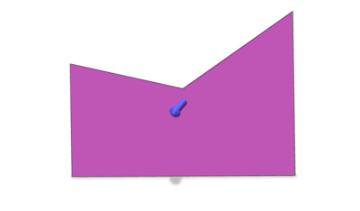
|
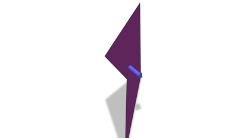
|
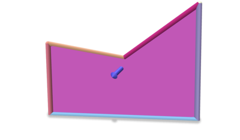
|
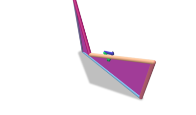
| 
|
Inner Product and Laplace-Beltrami Operators
For 0-forms, the inner product is the classical one induced by the \( l_2\) norm. For 1-forms, the inner product is given by PolygonalCalculus<SurfMesh>::M() (useful to define the Laplace-Beltrami operator).
| Operator | Output | Description |
|---|---|---|
| calculus.M(f,lambda) | \( n_f\times n_f\) | Inner product operator on discrete 1-forms operator (lambda is a regularization parameter, see [45]) |
| calculus.laplaceBeltrami(f,lambda) | \( n_f \times n_f\) | Laplace-Beltrami operator \( D^tMD \) (lambda is a regularization parameter, see [45]), the matrix is PSD |
Operators on directional fields and Connection Laplacian
In this section, we describe operators acting on directional fields (Levi-Civita connection, covariant gradient of a vector field –first-order derivative on VF–, and connection laplacian). Pleas refer to [45], section 5, for details.
As an example, these operators can be used to interpolate vector fields as illustrated in Vector Heat Method using discrete polygonal calculus.
Covariant Gradient and Projection
Since these operators are themselves matrices they cannot be constructed in the same way as the others ( Operator builder Matrix * function restricted to face Vector ), you need the specify the local vector field as well, in the same format as in [45], i.e.
\begin{eqnarray*} u_{f} = [u_{v_1}^t \ldots u_{v_{nf}}^t]^t \end{eqnarray*}
where \(u_{v_i}\) are the intrinsic vectors at each adjacent vertex expressed in their own tangent basis.
| Operator | Output | Description |
|---|---|---|
| calculus.covariantGradient(f,uf) | \( 2\times 2\) | Covariant Gradient defined for intrinsic vector valued 0-forms at face f |
| calculus.covariantProjection(f,uf) | \( n_f \times 2\) | Covariant Projection operator defined for intrinsic vector valued 0-forms at face f |
Vector Laplacian
Using the same format for vector fields as above, we can define a Vector Laplacian operator per face.
| Operator | Output | Description |
|---|---|---|
| calculus.connectionLaplacian(f,lambda) | \( 2n_f\times 2n_f\) | Vector Laplacian defined as the associated Matrix with the Dirichlet energy for vector valued 0-forms (lambda is a regularization parameter, see [45]) at face f, PSD matrix |
Global calculus
Given a scalar function defined on a generic surface mesh vertices, all previously mentioned operators can be applied to obtain consistent quantities on the overall mesh. For instance, from the dgtalCalculus.cpp example using Shortcuts and ShortcutsGeometry to set up the surface:
| Surface | Phi | Gradient | Gradient+co-gradient |
|---|---|---|---|
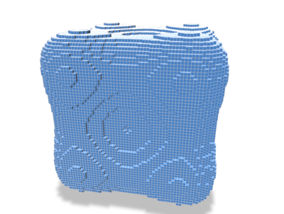
|
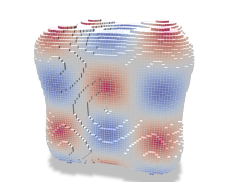
|
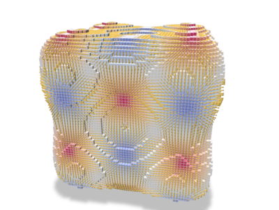
|
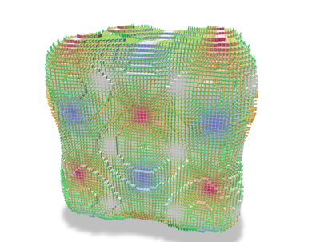
|
To solve some global PDE (e.g. Laplace/Poisson problems, see below), one can combine the local operators into a global one, gathering the contributions of each face.
For example, the PolygonalCalculus<SurfMesh>::globalLaplaceBeltrami() method outputs a global (sparse) Laplace-Beltrami operator which can later be used for diffusion.
You can also retrieve the global mass matrix via PolygonalCalculus::globalLumpedMassMatrix, which is used to define an inner product for 0-forms (i.e. scalar functions), as well as its inverse PolygonalCalculus::globalInverseLumpedMassMatrix(), generally used when one solves a weak problem and wishes to get a pointwise per-vertex solution.
Corrected Calculus using Estimated Normal Vectors
On digital surfaces, solving PDE on original embedding with axis aligned quad surfaces may fail to correctly capture the surface metric. As discussed in [26], given an estimation of the tangent bundle of the discrete surface (for instance using estimated normal vectors from Integral invariant curvature estimator 2D/3D, or Digital Voronoi Covariance Measure and geometry estimation, cf Shortcuts (for the impatient developper)), one can implicitly project each face to a prescribed tangent plane and perform the computations on this new embedding of the geometry.
| Geodesic distances without correction | Geodesic distances with correction |
|---|---|
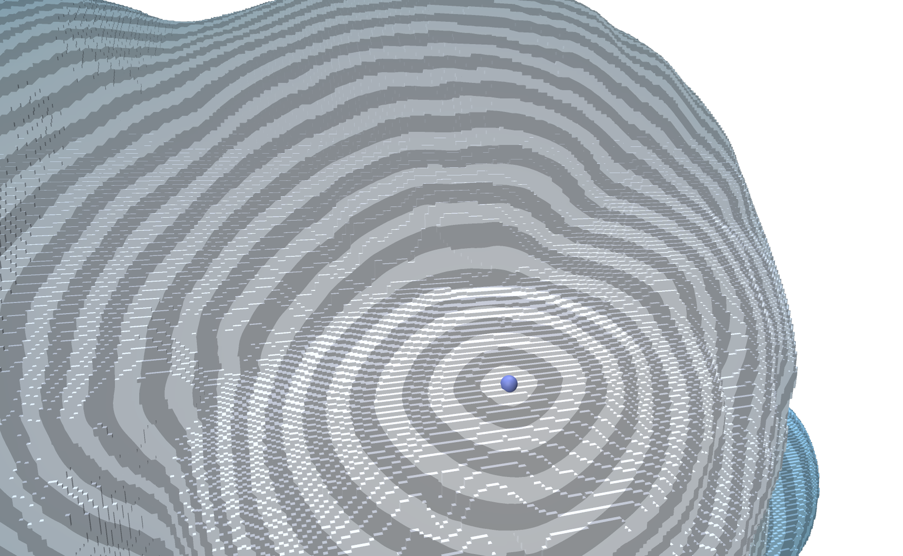
|
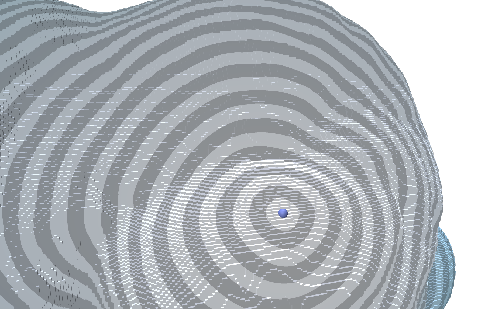
|
The functor functors::EmbedderFromNormalVectors can be used to implicitly project Face vertices onto the prescribed tangent plane. A classical usage is the following one:
A complete code is given in the dgtalCalculus-geodesic.cpp example.
Example: Solving a Laplace problem
Let suppose we want to solve the following Laplace problem for data interpolation:
\begin{eqnarray*} \Delta_\Omega u& = 0 \\ & s.t. u = g \text{ on } \partial\Omega \end{eqnarray*}
We want to solve that problem on a polygonal mesh \(\Omega\) (digital surface here) with a boundary and some scalar values attached to boundary vertices, or sampled on the object surface.
Furthermore, the discrete version of the Laplace problem boils down to a simple linear problem using on the discrete Laplace-Beltrami sparse matrix.
We also use class DirichletConditions to enforce Dirichlet boundary conditions on the system.
The overall code is:
Leading to the following results (see dgtalCalculus-poisson.cpp):
| Surface | Boundary condition \( g\) | Solution \( u \) |
|---|---|---|
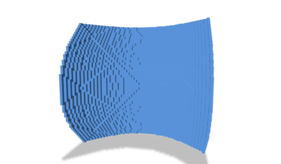
|
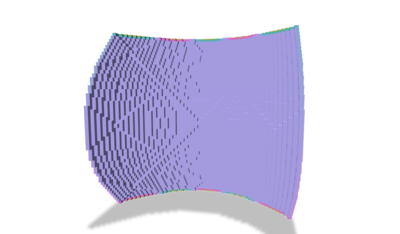
|
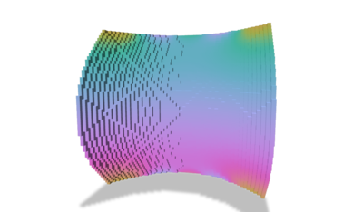
|
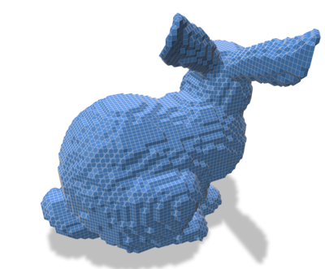
| 
|
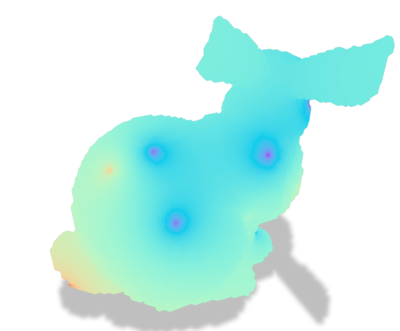
|
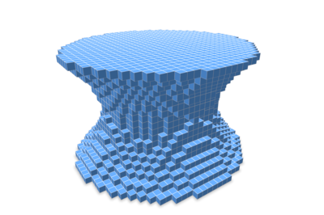
|
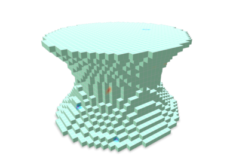
|
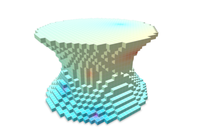
|
Vector Calculus
Global Vector Laplace/Poisson problems can also be solved by the same way, using instead PolygonalCalculus<SurfMesh>::globalConnectionLaplace() and PolygonalCalculus<SurfMesh>::doubledGlobalLumpedMassMatrix(). One can find examples of such use in the VectorsInHeat class.
Miscellaneous
Cache mechanisms and high-performance computing
The PolygonalCalculus class has two cache mechanisms:
- An external cache strategy to store a given operator into a compact container. Typical use case is when the user wants to precompute a given operator, store it and efficiently reuse it while iterating over the faces. We detail this construction below.
- The second one is a global internal cache strategy that will store all per face operators on the fly. In that case, each operator returning a DenseMatrix is stored in a cache the first time the calculus.operator(f) is called. Typical use case is when the user wants to use many times a large set of different operators. To enable this strategy, you can use the calculus.enableInternalGlobalCache(), or from the last parameter of the class constructor (boolean set to true). E.g. By default, this behavior is disabled as it is memory expensive (all operators are explicitly stored when used for the first time), and may not have a huge running time impact for some applications. An example is given in the dgtalCalculus-bunny.cpp. Once enabled, the class API remains the same, everything is transperent to the user.
We describe here the first external cache strategy. For the sake of readability, each operator has been implemented implicitly. For example, the M operator per face is given by
which could be time consuming as the internal operators may be computed several times.
For high performance computations, we provide a generic cache mechanism to explicitly store all per face operators of a surface mesh (stored in a random access container).
A typical usage is
Then, cached operators can be accessed and combined: